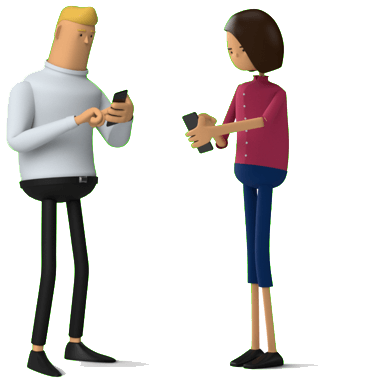

Secure online voting system
Optimize your election with blockchain-based online voting tool
Create Vote Watch Demo
Immutable
Transparent
Resource-saving

Polys is based on blockchain technology, which makes voting 100% secure and immutable. Voter anonymity is guaranteed by transparent crypto algorithms.
With Polys, creating a vote is intuitive, easy and fast. No coding knowledge is required. Voting can be conducted on the go on a smartphone or tablet.
One of the main characteristics of blockchain technology is its transparency. The crypto algorithms that we use on top of it are merely mathematics.